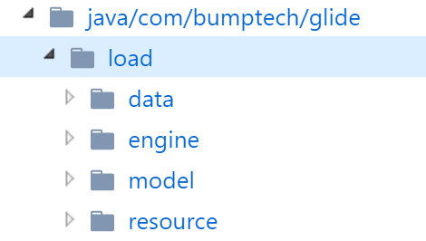
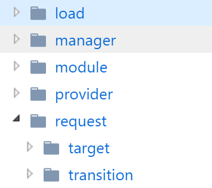
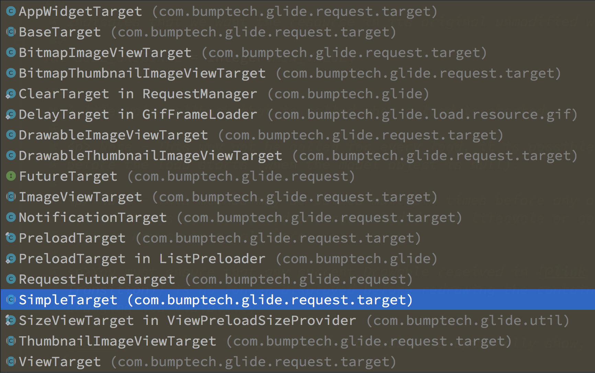
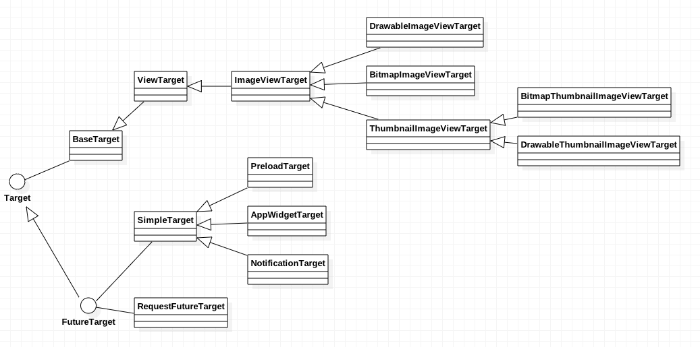
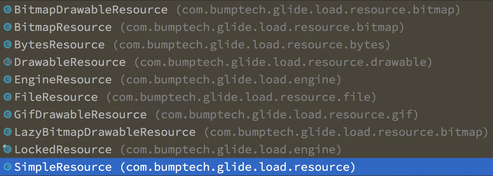
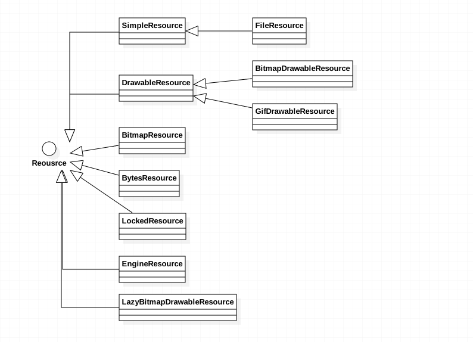
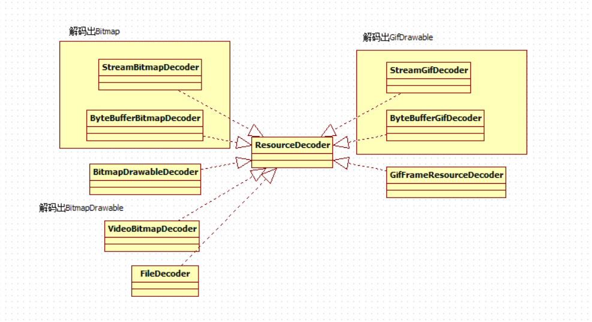

截至Glide 4.0版本，其代码量已经相当多了。所以学习Glide源码前很有必要了解Glide中几个关键概念，并从整体上理解这些关键概念之间的关系，否则很容易迷失在代码的实现细节中。
Glide简介
Glide涉及到的知识点很多，包括Bitmap重用，Bitmap缓存，生命周期管理，数据加载，资源解码，图片变换，线程调度，等等。另外Glide充分解耦，大量使用接口、泛型以及各种设计模式，并支持外部HttpClient和模块配置。所以学习Glide源码前很有必要了解Glide中几个关键概念，并从整体上理解这些关键概念之间的关系，否则很容易迷失在代码的实现细节中。
注意，下文中的分析均基于Glide 4.0版本。
下面分别从代码视角和包结构视角看看Glide的关键概念以及它们之间的关系。
代码视角
一个典型的Glide调用如下：
1 | Glide.with(context).asBitmap().apply().load(model).into(target) |
看似简单的调用实际上包含相当丰富的信息量。
简单来说，Glide加载(load)模型(Model)，将返回的数据解码(decode)成资源(Resource)，并将资源设置到Target中。
| 方法 | 功能 | 对应的接口和类 |
|---|---|---|
| with(context) | 生命周期管理 | Lifecycle |
| asBitmap() | 数据解码 | Resource, ResourceDecoder |
| apply() | 缓存等等 | TODO |
| load(model) | 数据加载 | ModelLoader, ModelLoaderFactory, DataFetcher |
| into(target) | 资源的显示 | Target |
Resouce, Data, Source的区分
- Resouce (Data) - 已解码的资源(已解码，采样，或转换)
- (Source) Data - 原始的数据(未解码), ResourceDecoder.decode(data)得到Resource
- Source - 原始的数据源，ModelLoad.load(model)得到(Source) Data
如何理解Encode操作？ TODO, load, fetch, cache, decode, transcode都好理解
包结构视角
Glide作为图片加载库，其工作分为核心部分和其他部分。Glide清晰的包结构体现了这种划分：
核心工作

engine负责load指定的model, 并将得到的data解码成resource。

对resource进行某种transition操作后将其显示到target。
其他工作
- manager - 负责各种管理工作，包括生命周期，网络连接以及网络请求
- module和provider - 为Glide的模块配置提供支持
生命周期管理
Glide使用LifecycleListener监听Fragment和Activity的生命周期。LifecycleListener接口定义如下：
1 | public interface LifecycleListener { |
详见Glide生命周期管理。
Target
Target可以理解为Resource的最终载体，如ImageView。Target接口定义如下：
1 | public interface Target<R> extends LifecycleListener { |
load resource过程中Target会经历对应的生命周期事件，包括：
- onLoadStarted()
- onResourceReady()
- onLoadCleared()
- onLoadFailed()
典型的生命周期过程如下：
onLoadStarted -> onResourceReady -> onLoadCleared
onLoadStarted -> onLoadFailed -> onLoadCleared
注意：不保证一定执行某些方法。比如，如果可以在memory中找到resource，或者mode对象为null，都会导致onLoadStarted()不被执行。
Target接口的实现类非常多：

这些类的层级关系是这样的：

FutureTarget有点特别，其行为跟Future类似。(注意FutureTarget.get()方法必须在工作线程中调用！)
1 | FutureTarget<Bitmap> futureTarget = |
RequestFutureTarget是FutureTarget的实现类。可以使用RequestFutureTarget实现下载图片文件的功能。
1 | FutureTarget<File> target = null; |
Resource和ResourceDecoder
Resource对某些类型的数据进行包装，以便池化和重用。Resource接口定义如下：
1 | public interface Resource<Z> { |
具体来说，Resource包括以下类型：
- File
- Bitmap
- Drawable
- BitmapDrawable
- GifDrawable
- Bytes
(你可能会注意到RequestManager中有对应的asFile(), asBitmap(), asGif(), asDrawable()等方法)
以下类实现了Resource接口：

这些类的层级关系是这样的：

ResourceDecoder
以下类实现了ResourceDecoder接口：

- VideoBitmapDecoder - 从一个包含视频文件的ParcelFileDescriptor中解码出一帧Bitmap
- StreamGifDecoder - 一个不太高效的GifDrawable解码器
- StreamBitmapDecoder - 从InputStream中解码出Bitmap
- GifFrameResourceDecoder - 从一个表示Gif图片的GifDecoder解码出一帧
- FileDecoder - 从文件创建FileResource
- TODO
Model和ModelLoader
Model可以理解为待加载的数据。比如网络图片的url地址或者Android工程的图片id，都是Model。
Glide没有将Model封装成新的类，而是直接使用已存在的数据类型，包括：
- String
- Uri
- File
- int (resourceId)
- URL
- byte[]
RequestBuilder对每一种Model类型都有一个loadXXX()方法。
ModelLoader用于加载Model。ModelLoader可以将任意复杂的数据模型转换成具体的数据类型，以便DataFetcher可以获取为Resource获取代表Model的数据。ModelLoader接口定义如下：
1 | public interface ModelLoader<Model, Data> { |
- ModelLoader中有一个静态类LoadData
- buildLoadData() - 根据指定的Model, width, height, options等条件返回一个能够对数据进行加载的LoadData
- handles() - 判断是否能够加载指定model类型的数据
ModelLoader接口有两个作用：
- 用于将特定的Model转换成可解码为Resource的数据
- 允许Model根据View的大小获取特定尺寸的Resource
ModelLoader是抽象的，具体实现的子类中都会实现自己的ModelLoaderFactory。
1 | public class HttpGlideUrlLoader implements ModelLoader<GlideUrl, InputStream> { |
DataFetcher
ModelLoader并不是直接加载资源，而是每次加载资源时都会创建一个新的DataFetcher，由DataFetcher延迟加载数据。
DataFetcher接口定义如下。
1 | public interface DataFetcher<T> { |